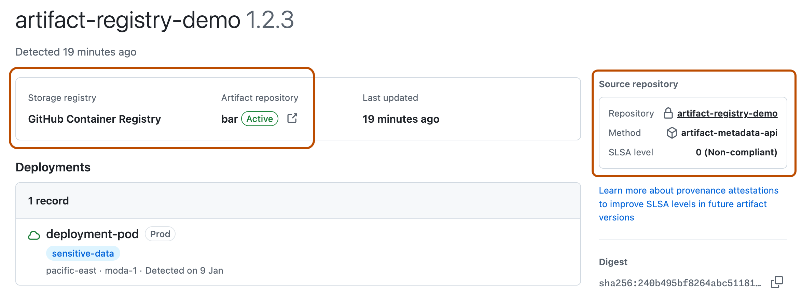
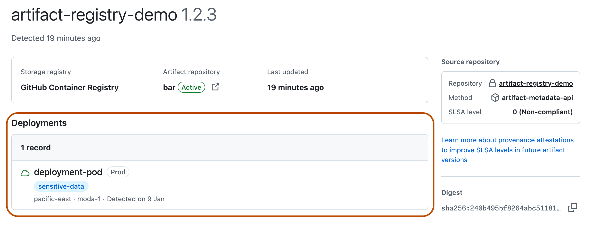

The linked artifacts page helps you audit and prioritize your organization's builds on GitHub, regardless of where the artifacts are stored.
The linked artifacts page provides a unified view of software artifacts that your organization builds with GitHub Actions, such as container images, packages, or builds of your production code.
The page shows you how an artifact was built, where it is stored or running, and which compliance and security metadata is associated with the artifact.
Teams in your organization can use data from the linked artifacts page to:
The linked artifacts page is unique to each organization. It contains metadata for artifacts that have been built with GitHub Actions in your organization's repositories. It does not display artifacts your organization consumes from elsewhere, such as open source dependencies.
Artifact records are uploaded by your organization using either a public API or an integration with an external registry. The linked artifacts page does not store the artifact files themselves. It just provides an authoritative source for the metadata associated with each artifact.
Because an artifact does not need to be stored on GitHub to appear in the linked artifacts page, you can use the linked artifacts page alongside your preferred package registry, such as JFrog Artifactory or GitHub Packages.
The linked artifacts page combines data from two different types of record: storage records and deployment records. These records are uploaded using different API endpoints or integrations.
Storage records include the repository containing the artifact's source code, the registry where the artifact is stored, and any attestations proving the artifact's integrity and provenance. You can use this data to quickly find an artifact's owning team and build details.

The artifact repository is not mandatory. It refers to the concept of a repository in certain external package registries: a place where multiple packages can be grouped. By contrast, the source repository refers to the GitHub repository where the artifact is built. The source repository is mandatory, and is detected automatically if the artifact has a build provenance attestation.
For more information about attestations and SLSA levels, see Artifact attestations.
Deployment records include the environment where the artifact is deployed and any runtime risks (such as "sensitive data" or "internet exposed") associated with the artifact.

Note
Deployment records do not include deployment activity from a repository's deployments dashboard, which comes from a different source. See Viewing deployment activity for your repository.
As well as being available on the linked artifacts page itself, artifact metadata is integrated into policy and security surfaces on GitHub. Teams can use this data to make policy decisions or prioritize security issues. For example, they can:
deployed or deployable filters to search for repositories or target repositories in organization and enterprise rulesets. See Searching for repositories.This example workflow shows how the linked artifacts page integrates with other GitHub features and external systems.
A developer commits code to a GitHub repository where the code for a software package is defined.
A GitHub Actions workflow in the repository automatically:
Metadata for the package, such as its linked repository, attestations, and deployment history, is uploaded to the linked artifacts page.
Using the data from the linked artifacts page, a security lead triages code scanning and Dependabot alerts, and creates a campaign to address alerts that affect production environments or have a specific runtime risk.
When an audit is required, a member of the compliance team exports SBOMs, provenance details, and deployment records for all your organization's linked artifacts from a single source.
To add records to your organization's linked artifacts page, see Uploading storage and deployment data to the linked artifacts page.
To view the linked artifacts page for your organization, see Auditing your organization's builds on the linked artifacts page.